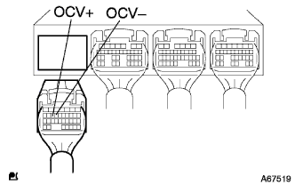

DTC P1656/39 OCV system |
| DTC No. | DTC detection conditions
| Inspection site |
| P1656/39 |
|
|
| Step 1 | Camshaft timing oil control valve ASSY single inspection |
reference)
|
| ||||
| OK | |
| Step 2 | Wire harness or connector inspection (engine control compilation-Kamshiyaft timing oil control valve) |
|  |
Cut the connector of the engine control compilation connector A and the camshaft timing oil control valve.
Use the Toyota Electrical Tester to inspect the conduction and short circuit between the vehicle connector of the vehicle side of the engine controlled compilation composer ← → the camshaft timing oil control valve.(The terminal array isreference)
| Measurement terminal (terminal name) Engine Control Company ← → Kamushiyaft Timing Oil Control Valve | standard |
| A15 (COV+) ← → 1 (+) | There is no conduction, there is no short circuit between other terminals and between body earth |
| A14 (OCV-) ← → 2 (-) | There is no conduction, there is no short circuit between other terminals and between body earth |
|
| ||||
| OK | |
| Step 3 | Engine Control Computer Single Inspection |
Connect the SST (Tascan) between the engine control compilation connector A15 (OCV+) ← → A14 (OCV-) terminal.(The terminal array isreference)
Set SST (Tascan) into the oscilloscope function.[See the Tascan instruction manual for the setting method]
| item | Content |
| Measuring terminal | OCV+← → OCV- |
| Instrument set | 5V/din, 1ms/div |
| conditions | At the time of idle rotation |
|
| ||||
| OK | ||
| ||